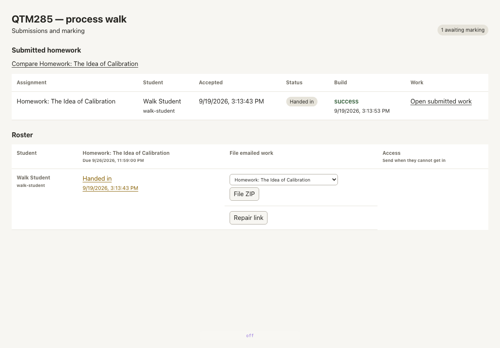

The teaching loop
One pass through the whole process, walked on 2026-09-19 against the running system. Every number on this page was measured on that walk; every screen is a capture of the real surface, not a drawing of one.
The walk ran on a copy of the live course — the source tree of qtm285-book
cloned to its own project, its own course, its own assignment, its own student.
Same code, same server, same build executor, same publish path.
Beat 1 — He edits a chapter
On screen. The chapter source in his editor, on disk, in the course repo.
What he does. Adds a sentence to chapters/chapter-sampling.qmd.
@@ -37,2 +37,4 @@ We'll run three surveys, each about a different pair.
+The population never changes between surveys; only the pair being asked about does.
+
- Survey 1: `r A1` or `r B1`
What changes. One file on disk. Nothing else yet.
Beat 2 — It builds
On screen. The terminal, briefly, then nothing to watch.
What he does. Nothing. The push is the whole action.
$ tlda project push
Source submitted.
push returned 4 seconds
rebuild settled 79 seconds
What changes. The submitted revision becomes the built book. Seventy-nine seconds from a saved file to a rebuilt chapter — the first build of a project is a cold full render and takes minutes, but this is the loop he is actually in.
Beat 3 — He sees it
On screen. The rebuilt chapter, with the new sentence in place, the R code
around it evaluated — rainbow straws, pickle roulette are computed values,
not typed ones.

What changes. The sentence he typed is in the book, in position, rendered.
Space. Same chapter, same scroll position he was reading.
Beat 4 — It publishes
On screen. Nothing. Publishing is a consequence of the build, not a separate act.
What changes. The built book becomes a static site: toc.json,
page-info.json, and a rendered page per entry, served over the public web.
pages published 33
of which decks 6
table of contents agrees with the pages, 1 : 1
Beat 5 — Students see it
On screen. The class site. Title, the figure, the description, and the two doors in: book and app.

What they do. Click through to a chapter, or download the homework zip.
links on the page 19
resolving 17
the rest an `app` route and a `tel:` number
Space. New frame. This is the first screen that is not his.
Beat 6 — They hand in
On screen. Positron, the editor the class works in. View → Command Palette → Homework: Submit.
What happens. The command reads the server and assignment out of the homework's own front matter, zips the assignment folder, and posts it.
SERVER ACCEPTED
assignment walk-calibration
student walk-student
answers parsed 13
build success, 22 seconds later
What changes. Their work becomes a rendered document on the server, keyed to the thirteen answer blocks they filled in. No upload page, no attachment, no email.
Beat 7 — He marks
On screen, first. The gradebook. Every hand-in, whether it built, and the way in.

What he does. Opens the submitted work.
Beat 8 — They get it back
On screen. One button, in the header.
What this page is
An acceptance test with pictures. It exists because the loop ran end to end on the date above; each beat was performed, not described.